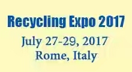
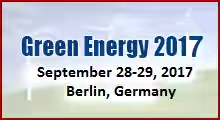
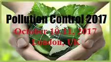
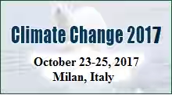
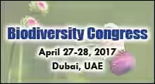
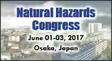
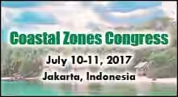
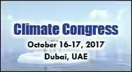

Environmental Sciences Conferences |
Environmental Sciences provides an integrated, quantitative and interdisciplinary apporach to study the environmental systems and find solutions to resolve the problems associated with it for sustainability. To explore the issues, innvocations and integratd approaches towards enviromental sustainability, Conference Series LLC annually organizes a series of International Science Cofferences. Cofferences Series LLC annually organizes a series of International Environmental Science Coferences in the fields of Recycling, Green Energy, Pollution Control, Climate Change, Coastal Zone Management, Oceanograph, Global Warming etc.
Environmental Science Conferences provides a unique platform of eminent Professionals, Scientists, Researches,Academicians,and Entrepreneurs across the globe to participate and share their research advancements and new technologies.
Previous Environmental Sciences Conferences |
|
|
|
|
|
|
|
|
|
|
|
|
|  | Recycling Conferences|Waste & Recycling Conferences:Recycling Conferences
will be held during July 27-29,2017 at Rome, Italy and mainly focuses on the importance of Recycling to save ecosystem. |
|  | Green Energy Conferences|Renewable Energy Events:Green Energy Congress is
going to be held during September 28-29,2017 at Berlin,Germany and sharing knowledge and research in the arena of renewable energy
and environmental sciences. |
|  | Pollution Control Conferences|Pollution Control Events|Sustainable Environment
Conferences:Pollution Control Conferences will be held during October 10-11,2017 at London,UK and mainly focuses
on the importance of controlling the pollution to save the environment. |
|  | Climate Change Conferences|Climate Change Events|Climate Change Conferences:
Climate Change Conferences will be held during October 23-25 2017 at Milan,Italy and mainly focuses on the climate change to
save the ecosystem. |
|  | Biodiversity Conferences|Biodiversity Events|Conservation Conferences:
Biodiversity Congress is going to be held during April 27th 28th 2017 at Dubai,UAE and sharing
knowledge and research in the area of ecology and environmental sciences. |
|  | Nautral Hazards Congress:Natural Hazards Congress promote their
research advancements and products in the fields of Environmental Sciences,Climate Change and Disaster Managements. |
|  | Conastal Zones Conferences|Costal Zone Management Conferences|Coastal
resource Management Conferences:Coastal zones congress is going to be held duing July 10-11,2017 at jakarta,
Indonesia and sharing knowledge and research in the area of Marine. |
|  | Climate Change Conferences|Global Warming Conferences|Environmental
Conferences:Climate Congress is going to be duing October 16-17,2017 at Dubai,UAE and sharing knowledge and
research in the arena of environmental sciences. |
| International Environmental Negotiations |
|---|
A sustainable solution to climate change needs strong international governance, as well as measurable local action to implement international commitments at the domestic level.This programme explores the prospects for international collective action on climate change.It aims to shed light on the historical and socio-political factors offecting a global deal on climate change,using methods such as game theory and survey analysis of negotiators's perceptions of the costs,benedits and risks of climate action.